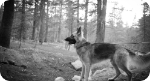

O princípio da identificação de predadores é: saber os 4
passos de segurança e entender como funciona a mente
do criminoso - e é exatamente isso que vou te ensinar
no evento.
O que você vai aprender no evento de lançamento:

Como observar os indivíduos e
o contexto em cada situação.
Como decidir o melhor a ser
feito em qualquer situação de
perigo.

Como se orientar de forma
segura e racional.
Como agir corretamente em
qualquer situação.
Bônus:
A mentalidade do criminoso

Quem é Nicolas?
Sou especialista em consciência situacional, e tudo
isso começou desde a juventude, onde meu pai
me mostrava a importância de me atentar em
todos os locais que eu estivesse, e ensinava o que
havia adquirido durante a vida sobre proteger os
seus.
Depois de aprender com ele, passei a buscar
informações sozinho, e cheguei a conteúdos muito
mais profundos e aprendi em primeira mão
Consciência Situacional e Defesa pessoal com
professores do mundo inteiro.
Já vivi situações reais e sei como a consciência
situacional deve ser enquadrada na prática, e vou
te ensinar a ser um detector de predadores, fazendo
com que você tenha mais segurança no dia a dia.